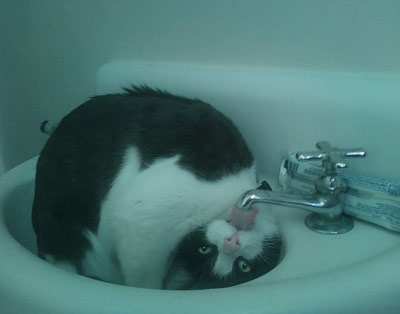

/* Моя кошка замечательно разбирается в программировании. Стоит мне объяснить проблему ей - и все становится ясно. */
John Robbins, Debugging Applications, Microsoft Press, 2000

/* Моя кошка замечательно разбирается в программировании. Стоит мне объяснить проблему ей - и все становится ясно. */
John Robbins, Debugging Applications, Microsoft Press, 2000
В Android часто используются адаптеры. Если говорить в общих чертах, то адаптеры упрощают связывание данных с элементом управления. Адаптеры используются при работе с виджетами, которые дополняют android.widget.AdapterView: ListView, ExpandableListView, GridView, Spinner, Gallery, а также в активности ListActivity и др. Сам AdapterView дополняет android.widget.ViewGroup.
Итак, у нас есть набор объектов и есть компонент View. Назначение адаптера заключается в том, чтобы предоставлять дочерние виды для контейнера. Адаптер берет данные и метаданные определенного контейнера и строит каждый дочерний вид. Например, мы формируем пункты списка (массив строк) и передаём его списку ListView.
Вы что-нибудь поняли? Мой кот тоже ничего не понял. Попробуем объяснить по-другому. Что такое вообще адаптер? Это переходник между двумя какими-то предметами. Допустим, между питьевой водой и котом требуется адаптер в виде крана.

В данном случае адаптер спроектирован плохо, приходится изворачиваться.
Однако вернёмся к Android. В приложениях очень часто используется список на основе ListView. Сам список состоит из множества элементов TextView, которые идут друг за другом. Но их количество будет зависеть от того, чтобы мы хотим отобразить. Если нам нужны дни недели, то достаточно семи элементов, если месяцы, то уже двенадцать, ну а если нам нужны имена котов в Кот д'Ивуаре, то счёт пойдет на сотни. Короче говоря, нам нужно составить данные, например, в виде массива и скормить его списку. Адаптер этим и занимается. Он берёт по порядку предоставленные данные и размещает их в списке по порядку. При этом адаптер на лету создаёт нужные компоненты TextView и помещает в него приготовленный текст. Данные могут быть находиться не только в массиве, но и в базе данных. Для такого случая используется другой адаптер. А также вы можете придумать свой адаптер. Существуют уже готовые адаптеры на самые распространённые случаи и их предназначение можно определить по именам. Например, ArrayAdapter использует массив, а CursorAdapter работает с объектом Cursor, используемый в базах данных.
Все адаптеры, содержащиеся в Android, дополняют базовый адаптер BaseAdapter. Вот список готовых адаптеров:
Класс SimpleCursorAdapter позволяет назначать данные Курсора, используемые источником данных, для компонентов.
Конструктор этого класса получает следующие параметры:
Класс SimpleCursorAdapter — это подкласс класса CursorAdapter, который был разработан для облегчения отображения столбцов класса Cursor непосредственно на компоненты TextView или ImagesView, определенные в XML-разметке. Для создания класса SimpleCursorAdapter сначала определите массивы, включающие имена столбцов, для отображения на компоненты GUI. Также следует определить ID ресурсов для компонентов GUI, которые отображают данные из именованных столбцов. В коде создается массив String, показывающий, что может отображаться лишь именованный столбец. Затем создается параллельный массив типа int, содержащий ID ресурсов для соответствующих компонентов GUI. Потом создается класс SimpleCursorAdapter.
Имейте в виду, что один из конструкторов адаптера теперь устарел. Вы его можете иногда встречать в старых проектах, но копировать в свой проект его не стоит. Дело в том, что его работа происходит в одном потоке с интерфейсом программы и может серьёзно затормозить работу списка. Теперь рекомендуется использовать новый класс CursorLoader, который можно считать аналогом AsyncTask для адаптеров, использующий асинхронные операции.
Пример использования: Адресная книга
Стандартные адаптеры не всегда покрывают потребности программиста. Если вам нужен свой собственный адаптер, то в Android есть абстрактный класс BaseAdapter, который можно расширить. Собственный адаптер необходим в тех случаях, когда требуется специальное управление данными или дополнительный контроль над отображением дочерних представлений. Кроме того, вы можете предусмотреть в своём адаптере элементы кэширования для повышения производительности работы.
Пример использования адаптере на основе BaseAdapter можно увидеть при создании GridView с картинками и в других примерах.
У BaseAdapter есть несколько методов, которые следует переопределить. Например, метод getCount() позволяет узнать количество выводимых объектов.
Другой важный метод адаптера — getView(), который отвечает за создание отдельных элементов списка. Он вызывается для каждого элемента списка, чтобы определить, какие данные нужно отобразить. Метод getVew() содержит параметр convertView, который позволяет использовать заново уже существующий элемент списка, который не отображается, т.к. пользователь пролистнул его с видимой части дисплея. Если convertView не пустой, он может быть использован заново, чтобы не грузить разметку списка. Подобный подход способствует увеличению производительности.
Метод getView() возвращает View, которы фактически является шаблоном (ViewGroup) и содержит в себе другие компоненты, например, ImageView или TextView.
На сайте представлены (будут представлены) практически все примеры с адаптерами. Оставайтесь на связи!